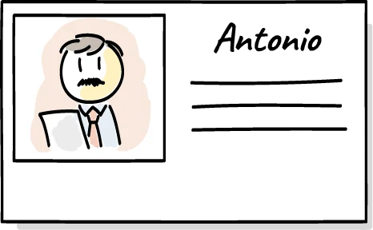
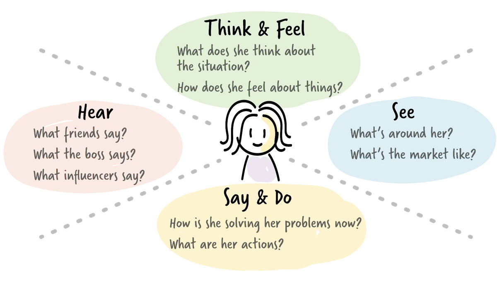
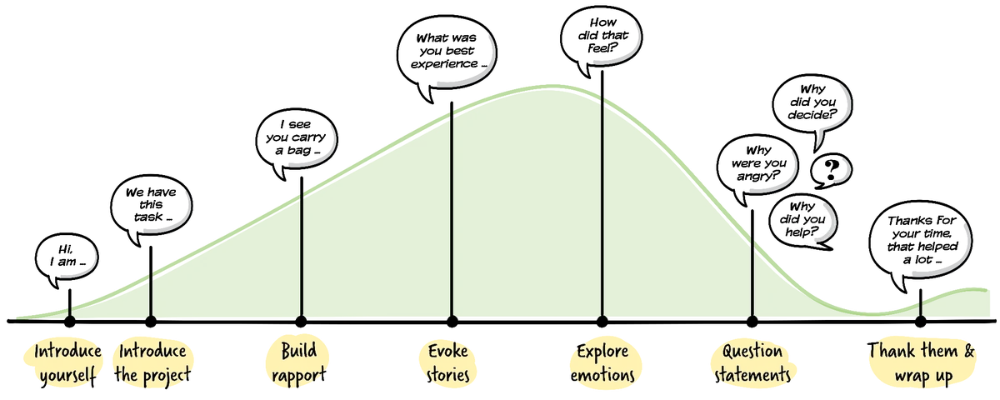

Three techniques
Great product decisions start with a real understanding of the people the product serves. Three techniques help build that understanding: personas, empathy mapping, and customer interviews.
Personas

A persona is a description of a distinct type of customer or user, built from real research rather than assumptions. Creating one starts with collecting and analysing data about actual customers through interviews, observations or simulations, forming hypotheses about how different customers vary from one another. Each persona is then given a name and a fuller picture, including things like their goals, frustrations and context, so the team can empathise with their perspective rather than just their demographics. Personas become more useful when applied to specific scenarios, such as a delivery being delayed or a product being unavailable, because this reveals what the persona actually needs in a moment that matters.
Empathy mapping

Empathy mapping is a simple collaborative tool used to deepen understanding of a specific user or persona by making their experience more tangible. It typically explores what the user says, thinks, does and feels in a given situation, often around a specific scenario such as completing a purchase or dealing with a problem. By externalising these perspectives, teams can surface assumptions, identify gaps in their understanding, and build a more rounded picture of user needs that goes beyond functional requirements. Empathy maps are especially useful early in discovery or alongside interviews and persona work, as they help turn fragmented observations into a shared, human-centred view that supports better design decisions.
Customer interviews

Customer interviews are the main way to gather this kind of insight directly. A good interview has a loose structure: an introduction and rapport-building phase, a phase of evoking stories and exploring emotions, and a closing phase that thanks the interviewee. It helps to have two people involved, one asking questions and managing the flow, the other observing body language and mood. During the interview itself, the goal is to ask open questions and ask why often, let the customer speak for most of the conversation, avoid judgement, and stay comfortable with silence rather than rushing to fill it.
Validate your assumptions
Underlying all three techniques is a simple but easily forgotten principle: it is fine to make assumptions about what customers want, as long as those assumptions get validated. Locking a team in a room and guessing at customer needs is the single most common way products go wrong. Customer centricity means placing the customer's actual, observed needs at the centre of the decision-making process, and constantly checking assumptions against reality rather than trusting them by default.
Templates
Printable A4 worksheets for applying this resource to your own product.
- Persona Canvas Describe one type of user, based on real research. Download PDF
- Empathy Map Build a shared picture of what a user says, thinks, does and feels. Download PDF
- Customer Interview Prep Sheet Plan an interview stage by stage. Download PDF